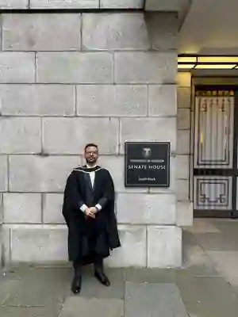
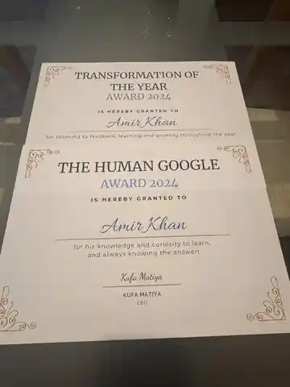

Build with purpose
Start with real customer problems and work backwards to practical solutions.
Mumbai, India / Working globally
I’m Amir Khan — a builder, operator and mentor who enjoys turning complex problems into clear strategy, useful products and sustainable growth.

From ideas
to impact.
My work spans technology, business analysis, enterprise sales, customer discovery and growth. I enjoy connecting what customers need, what teams can build and what businesses need to achieve.
My journey from Mumbai to London shaped how I think about ambition, opportunity and community. It also taught me that meaningful progress happens when people share what they know and help others move forward.
Read my Birkbeck storyStart with real customer problems and work backwards to practical solutions.
Bring structure to ambiguity through analysis, communication and collaboration.
Share lessons, support emerging talent and make room for other people to grow.
A cross-functional path through enterprise technology, data, commercial strategy and early-stage building.
Luminox Automation · Mumbai
Lead business strategy and customer discovery, build partnerships and go-to-market initiatives, and coordinate work across product, technology and business teams.
FutureMatch · London
Built a qualified UK pipeline for an AI-enabled HR-tech SaaS platform, tailored demonstrations and business cases to client environments, and ran account-based marketing campaigns.
BreakBottle · London
Built B2B partnerships including with Sage and Imperial Business School, delivered organic marketing and SEO-led content, and supported sustainability-focused SMEs.
IFI Techsolutions · Microsoft Partner
Oversaw a global cloud support team of 15+ engineers, supported a reported 99.95% SLA through quality-control processes and audits, and prepared risk assessments and root-cause analysis. Earned a 5/5 performance review and a fast-track promotion in April 2022.
Luminox Automation · Mumbai
Worked on smart-home IoT product development from concept to launch and coordinated iOS and Android application development, including UI/UX.
Hudl · Mumbai
Analysed more than 400 matches across multiple sports, maintained reported 98% quality-control consistency and translated findings into actionable insights for coaching staff.
Recognition, learning and the people who make the journey better.
FutureMatch · Belfast
A New Year get-together with the FutureMatch team in Belfast — a reminder that the best work grows from shared effort, curiosity and good people.
01 / TEAM
FutureMatch · 2024
The Transformation of the Year Award and the Human Google Award — recognising learning from feedback, curiosity, knowledge and helping others find answers.
02 / RECOGNITIONUniversity of London
A proud graduation moment marking an academic journey shaped by technology, management and new perspectives.
03 / LEARNING180 Degrees Consulting · Sofia
During my consulting summer internship, I worked with a fantastic team on strategies and practical solutions with mentors from Baringa. Travelling to Sofia for the final presentation meant meeting teammates in person for the first time.
04 / CONSULTING
London Startup Fair · 2023
I volunteered with LSESU Entrepreneurs, UCL Entrepreneurs and Imperial Entrepreneurs. Thanks to Raghav Sanagavarapu, Jai Ansh, Reese Wong, Maria Timofeeva, Tom-Bennett Flemming, Tse-Han Wu, Toby Wong and the wider core team for making the event possible.
05 / COMMUNITY
TEDx London Women · Volunteering
I volunteered with the TEDx London Women team, supporting a shared effort to bring people together around ideas, stories and perspectives.
06 / VOLUNTEERINGSSRN · Research paper
A research interest at the intersection of digital transformation, venture capital and the environments where startups form and grow.
Read the paperTopic description only; see the linked SSRN page for the paper itself and its publication details.
After moving from Mumbai to London to study at Birkbeck, Amir benefited from support through the Mentoring Pathways programme. He later became a mentor himself, helping mentees explore career paths, internship options and practical goals.
Read the full Birkbeck storyEducation
University of London, London
Mumbai University, Mumbai
A journey shaped by learning, opportunity and community.
Combining analytical discipline with customer empathy and cross-functional execution.
Business strategy · Customer discovery · Go-to-market · Enterprise sales · Partnerships · Account-based marketing
Data analysis · Cloud operations · Power BI reporting · Requirements gathering · Quality control · Risk management
Critical thinking · Stakeholder management · Agile / Scrum / SDLC · Communication · Cross-functional collaboration
Anthropic Claude 101 · Claude Code in Action & AI Fluency: Framework · PMI-CPMAI · Generative AI Overview for PMs · CDCA Introduction & Talking to AI (Prompt Engineering for PMs) · PMP (PMI) · Microsoft AI & Azure Fundamentals
Have a thoughtful challenge in mind?
I’m happy to connect with people building meaningful products, growing businesses or supporting the next generation of talent.